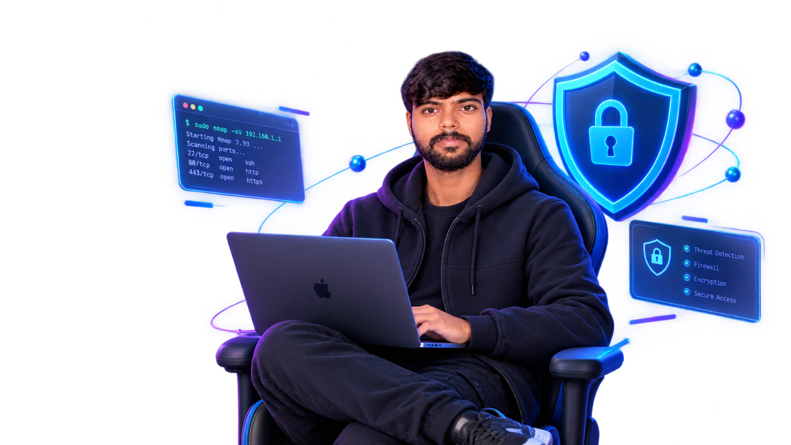

SYSTEMS
Linux administration
Getting comfortable with the command line, system concepts, and practical troubleshooting.
HELLO, I'M SURAJ YADAV
BSc.IT Student / Cybersecurity & Linux Enthusiast
I’m building a practical foundation in cybersecurity, Linux, networking, and Python. I like understanding how systems work, learning by doing, and keeping my progress honest.

A LITTLE ABOUT ME 01 — 05
I’m an IT student with a growing interest in cybersecurity and the systems that support our digital lives. My approach is to learn the fundamentals, practice in appropriate environments, and document what I understand.
There’s always more to learn. I’m currently strengthening my Linux, networking, and programming foundations as I explore security topics.
More about my journeyTHE JOURNEY 02 — 05
A few of the foundations I’m developing through study and practice.
SYSTEMS
Getting comfortable with the command line, system concepts, and practical troubleshooting.
CONNECTIVITY
Studying how devices communicate, and building familiarity with common protocols and network concepts.
CODE
Learning programming fundamentals and using small exercises to improve problem-solving.
SECURITY
Exploring security principles and ethical practice in learning environments.
AREAS OF FOCUS 03 — 05
These are learning areas, not proficiency ratings. I’m building experience step by step.
Linux command line, operating system fundamentals, system administration concepts.
TCP/IP, DNS, HTTP/HTTPS, and how network communication fits together.
Security fundamentals, web security concepts, and responsible lab-based learning.
Python and basic web technologies for practical exercises and personal projects.
SELECTED WORK 04 — 05
Only work that’s available to review is listed here. More as I build it.
A lightweight static website for sharing my background, current learning areas, and work as it becomes ready to publish.
View source on GitHub